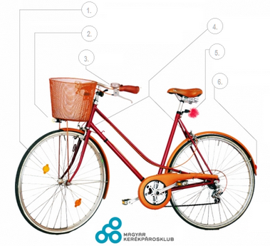

|
Kerékpáros KRESZ |
Kerékpározás előtt
-
Járművezetésre alkalmas állapotban kell lenni.
-
Ismerni kell a KRESZ-t.
KRESZ által előírt kötelező kerékpár-tartozékok

- Borostyánsárga színű küllőprizma legalább az első keréken, melyet kiegészíthet vagy helyettesíthet az abroncson lévő reflexcsík.
- Fehér vagy kadmiumsárga fényt adó első lámpa, ami villogó is lehet. Fehér színű első fényvisszaverő.
- Csengő.
- Két egymástól független fék.
- Piros fényt adó hátsó lámpa, ami villogó is lehet.
- Piros színű hátsó fényvisszaverő.
Kötelező még:
- Fényvisszaverő ruházat lakott területen kívül az úttesten éjszaka vagy rossz látási viszonyok között.
- Sisak használata lakott területen kívül 40 km/h feletti sebességgel haladás esetén.
További szabályok
- Tilos a kerékpárhoz oldalkocsit, illetve egyéb vontatmányt kapcsolni a kerékpár-utánfutó kivételével.
- Tilos kerékpáron ülve állatot vezetni.
- Tilos a kerékpárt más járművel vontatni.
- Tilos elengedett kormánnyal kerékpározni.
- Kerékpáron csak olyan csomag szállítható, amely a kormányzást nem akadályozza.
- Tilos autópályán és autóúton kerékpározni, továbbá ott, ahol ezt tábla tiltja. 12 év alatti gyerek főútvonalon nem kerékpározhat.
- A kerékpárosnak is, mint minden járművezetőnek, jeleznie kell minden irányváltoztatási szándékát, mégpedig balra kanyarodva bal, jobbra kanyarodva jobb kézzel. Az irányjelzést az irányváltoztatás előtt megfelelő távolságban és időben kell megkezdeni!
- Kétkerekű kerékpáron 16. életévét betöltött személy szállíthat 10 évnél nem idősebb, a kerékpárt nem hajtó utast a kerékpár pótülésén. Kettőnél több kerekű kerékpáron 17. életévét betöltött személy szállíthat a kerékpárt nem hajtó utast. Utast tehát csak az erre a célra kialakított pótülésen szabad szállítani kétkerekű kerékpáron - ha több ilyen ülés van, akkor akár több gyereket is magunkkal vihetünk.
- Kerékpárral lakott területen belül legfeljebb 40 km/h sebességgel szabad közlekedni. Lakott területen kívül sisakban 50 km/h a megengedett legnagyobb sebesség, de csak ha utast nem szállítunk, sisak nélkül pedig 40 km/h.
- Kerékpárúton 30 km/h, gyalog- és kerékpárúton 20km/h a megengedett maximális sebesség.
|
| |